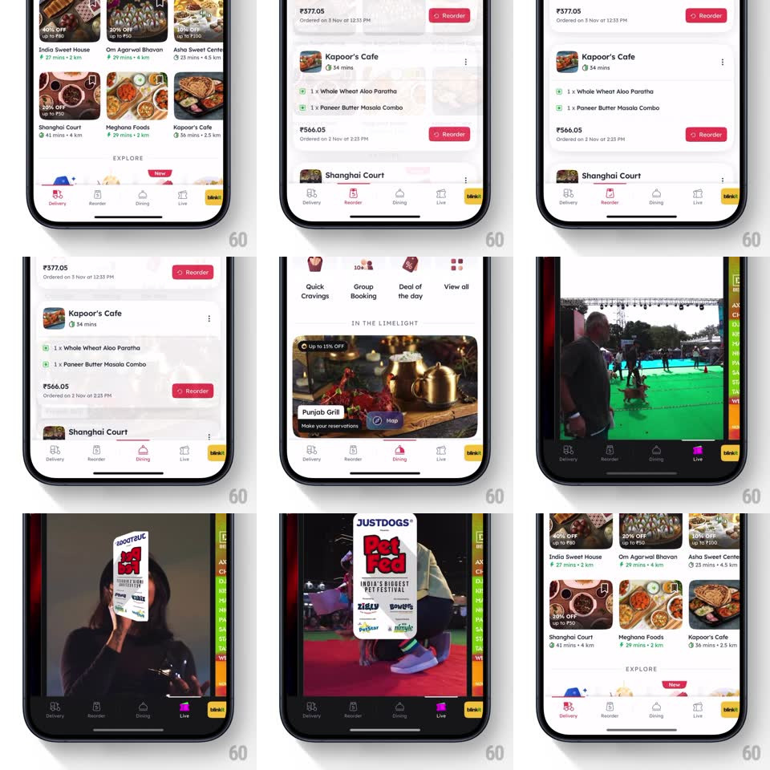

Media
Frame-by-frame

Rebuild this interaction 1:1: Zomato's bottom tab bar - every tab icon plays a short character animation when it becomes active (the Delivery scooter rides in, the Reorder arrows spin, the Dining cloche lifts), not just a color fill.

Rebuild this interaction 1:1: Zomato's bottom tab bar - every tab icon plays a short character animation when it becomes active (the Delivery scooter rides in, the Reorder arrows spin, the Dining cloche lifts), not just a color fill. ## Integration Integration: stack-agnostic spec - springs given as stiffness/damping, timed motions as duration + curve; map every value to your framework and animation library of choice. ## Scene The white Zomato bottom tab bar - Delivery, Reorder, Dining, Live, and the yellow blinkit tab at the right - with inactive icons in light grey outline and the active icon in red/pink over its label. Each tab's page sits behind (home feed, order history with Reorder buttons, Dining "In the Limelight" cards, Live video feed). ## Motion spec Pattern: animated icon-on-select micro-interaction. - Tap a tab: the outgoing icon steps back to its static grey outline; the incoming icon tints to brand red and runs its one-shot character loop: - Delivery: the scooter-rider rides in from the left (translateX -12pt -> 0, spring ~420/20) with a wheel-spin cycle and a small bob, settling centered. - Reorder: the circular arrow spins a full 360deg (400ms, ease-out) and pops its badge. - Dining: the cloche lid lifts (translateY -4pt + rotate -10deg, spring ~380/18) and settles back onto the plate. - Live: the broadcast rings pulse outward twice (scale 1 -> 1.4 + fade, 2 x 350ms). - The label fades/slides in with the icon (150ms, 40ms behind). - The whole run lands inside ~500ms; re-tapping the active tab does not replay it. - Page content crossfades/slides with the tab switch per the host pattern; the icon animation never blocks the page change. ## Calibration - Each icon's animation reads at 24pt - one clear move, not a busy loop. - Springs are snappy (damping 18-20, slight overshoot) so the icon feels alive, not sluggish. ## Reduced motion Static active icon with tint + label fade only. ## Don't miss - The blinkit tab keeps its yellow identity - it tints its own way, not Zomato red. - The animation plays only on activation; scroll or page data changes never retrigger it.